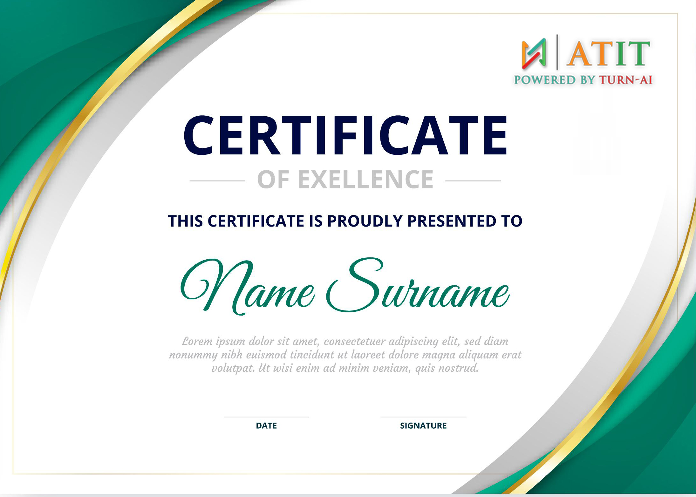

About Data Science Training Course
ATIT DevOps Training will help you master and build your DevOps skills with tools that matter - Docker Networks, Development Cycles, Puppet, Ansible, Chef, Vagrant, Jenkins, Nagios, and more. Instructors of ATIT are experts at teaching both the essentials and finer points of DevOps Concepts. This course will take through the practical aspects of DevOps and help you to apply these practices in real-world project examples. Enroll in our DevOps certification course to transform your career into a DevOps Engineer.
Experience the unparalleled edge of real-time project training – exclusive to us, as no other institutes can match our offering.
75 Hours of Sessions
Flexible Schedules
24/7 Lifetime Support
Certification Oriented Curriculum
FREE Demo on Request
One-on-One Doubt Clearing
Real-time Project Use cases
Data Science Training Course Content
This DevOps, training curriculum covers the introduction to DevOps, Continuous Integration Automation, Continuous Deployment, understanding of various categories of DevOps tools like Development Life Cycle Management, configuration management tools, Source code management, Automation tool, and Continuous monitoring tools. It also covers essential tools like Chef, Introduction to Docker, Integration of Docker, Docker Swarm, Jenkins, Nagios, etc.
Choose your own comfortable learning experience.
Whether you choose to learn online or offline, we're excited to have you as part of our DevOps community and look forward to helping you advance your career in the world of DevOps!
In today's digital age, DevOps has become an essential practice for organizations looking to streamline their software development and IT operations. This online course is designed to provide you with the knowledge and skills needed to excel in the world of DevOps, all from the comfort of your own home or office.
Course Highlights:
✔️ Flexible Learning: Learn at your own pace, and access course materials 24/7.
✔️ Expert Instructors: Our experienced instructors will guide you through the latest Manual Testing concepts, tools, and best practices.
✔️ Interactive Learning: Engage in discussions, collaborate with fellow learners, and work on hands-on projects to reinforce your understanding.
Join us online and embark on a journey to master Manual Testing, ensuring you are well-equipped to meet the demands of the ever-evolving tech industry.
In a world dominated by screens and virtual interactions, there's something special about coming together in person to learn and collaborate. Our DevOps class is designed to provide you with a hands-on, immersive experience that will empower you to become a DevOps expert..
Course Highlights:
✔️ Face-to-Face Interaction: Interact directly with instructors and fellow learners, fostering a supportive and collaborative learning environment.
✔️ Networking: Build valuable professional connections with your peers, instructors, and industry experts.
✔️ Physical Resources: Access to physical resources, tools, and equipment for a more comprehensive programming experience & learning experience
Join us offline concepts and practices, and leave with the skills and confidence to excel in the field of Manual Testing.
For Corporates
Empower your team with new skills to Enhance their performance and productivity
Corporate Training
Customized course curriculum as per your team’s specific needs
Training delivery through self-Paced videos liveInstructor-led training through online, on-premise at ATIT or your office facility
Resources such as slides, demos, exercises, and answer keys included
Complete guidance on obtaining certification
Complete practical demonstration and discussions on industry use cases
Served 120+ Corporates
DataScience Certification
Show the world that you have pursued one of the best in the industry
